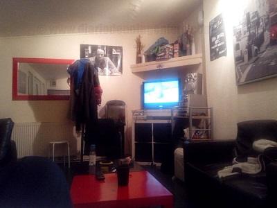
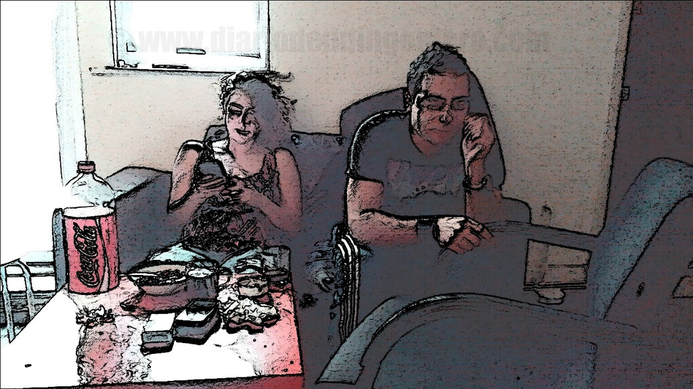

This part is more important even that the selection of the country in terms of the daily life because sometimes changing of neighbourhood sometimes give you the sensation than you are changing to a completely different country.
Biggest are the towns, biggest are this effect and London is the place where you can appreciate more this fact. Where I
have look mansions and luxury residential neighborhoods to a hundred meters of normal decadent residential areas mixed with commercial zones.
First when you arrive to town is find a hostel or a cheap hotel where we can begin to find a fix place. For this matter is mandatory search information in the web.
In addition to look their opinions and search for an option not too expensive, you should go to visit the house and the neighborhood for have an big idea of the place you are planning to settle.
For looking a good hostel I recommend the website www.hostelworld.co.uk, who has a lot of feedbacks than could influent you to the time to fix a decision.
You should take attention also to the disctance between your place and commercial areas or leisure areas. If there isn´t there and the neighbourhood is homogeneous probably the prices would be highs than other areas where could be more competitive. Once you have seen that next step it is make a list for places to visit. This list should not exceed six apartments per day because you can be exhausted at the end of the day and probably you could not remember some details because you would have a mixture of ideas. If you will be with somebody to do this visits it will be a great idea.
 
If you are alone and you would like to profit the money in other things and you are open mind, lover of new experiences and learn of the others it could be the best option.
But sometimes you need to accept to other people with other habits as you.
Also you don't need to fix contracts and landlords could be flexible in term of times.
If you share with people of the country, british or people who has lived for a longtime there you could learn the language while you are doing other things and also they could give opinions very important about places to visit, shopping, safety places, etc.
If you choose to share with people of your country you could be more relaxed in long term, and you will know better how to prevent situations but this will not be very helpful at the end.
Best option in my opinion, is share the house with people of other nationalities and also with someone near to your background.
If you have not share a appartment in your life is better to be with someone of your country because it could be a big step doing that thing.
Your partners in your flat also will leave the house some day and you will have new ones so the partners are not all, is a part to take in mind when you share an appartment but you will need to look all I have said before.
For that a website very useful is :www.spareroom.co.uk/

You could always look in gumtree, the website more used in united kingdom where you could find everything.
When you need to look and appartment you need to see some factors apart of the area and the price and to correlate with the price.
Age of the apartment and furniture..
Tax included in the price like, garbage collection, community or tax council
Energy efficiency, wall material and windows to the exterior and avoid the down and top floors.
Neighbourhood and people class of the district and class of people in the neighbourhood in general.
For the rent of the appartments the website more popular is: www.rightmove.co.uk/
Para el alquiler de pisos el portal más importante es: www.rightmove.co.uk/
To fix our base camp we need to focus in the next points :
Commercial centers, big as smalls.
Night pub areas. If they are too near our houses we could have noise at night and problems to sleep properly and if it is far of our house and we are social people and we enjoy doing parties on weekend could be also not a good option ;).
Public parks and tree areas in the case of a big town that allow us to breath better and know new people.
Sport installation and gym where you could know new people who like also the health life, :). This point is very important if you really like sports because if your flatmates don´t like sports you could find people who like the sport you like easily.
All this could have a lot of influence in the price we are looking for. Best thing is always adjust the price with our local finds but adding a 25% additional to the maximum price available, because even there will be flats who agree all the terms explained before and they are out of the price we marked. Sometimes prices had inside a possible discount after negotiation. Therefore, if they are expensive and they are already there could be because they don't have enough visits per month and the landlord could be flexible to the time to fix the price. It is important to give to him some tautness so you should be polite and wear normal clothes, and go in good conditions (not drunk :)).
Normally landlords claim for a deposit which never exceed the month and half of the medium price of the rent.
With that we were obligated to pay the day to enter as maximum twice and half the price of the rent taking in account the price of the first month.
In almost all thw countries, landlords are very exigent with this and if the rules are more or less flexible is something to take in account if we would like to begin with less problems.
Looks can be deceiving, so not do not be misled by the first impressions and sensations to the time to judge to the landlord because sometime could be friendly at first.
But when problems can could be a demon and let you pay things that you have not damage.
Most of the time the contracts are between equals and there is nothing official so you should speak about all terms in conditions in advances.
Sometimes landlords try to steal you with anything happen in the house.
In the case we don't trust about the landlord it is recommendable not pay in advance any money and try to delay one month when the things were not clear.
© 2016 - All Rights Reserved - Diseñada por Sergio López Martínez
![[Valid RSS]](https://www.feedvalidator.org/images/valid-rss-rogers.png "Validate my RSS feed")